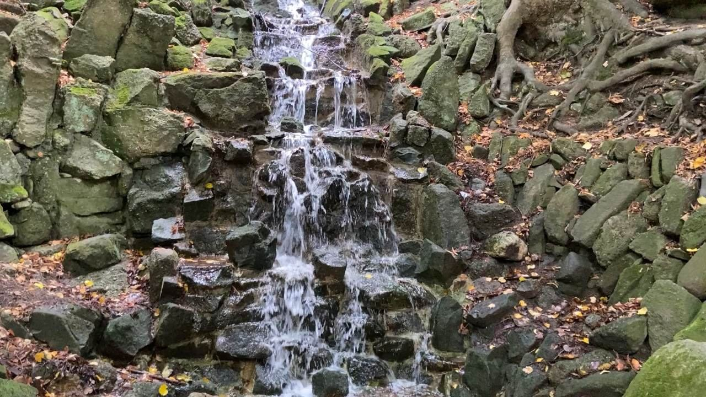
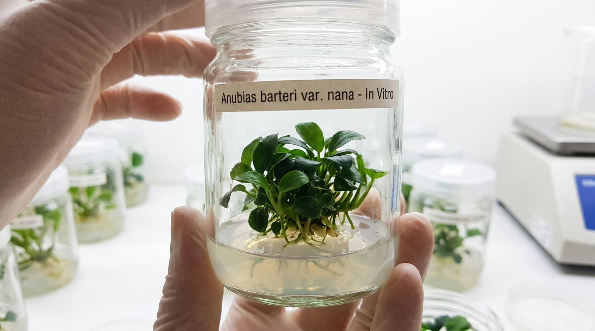
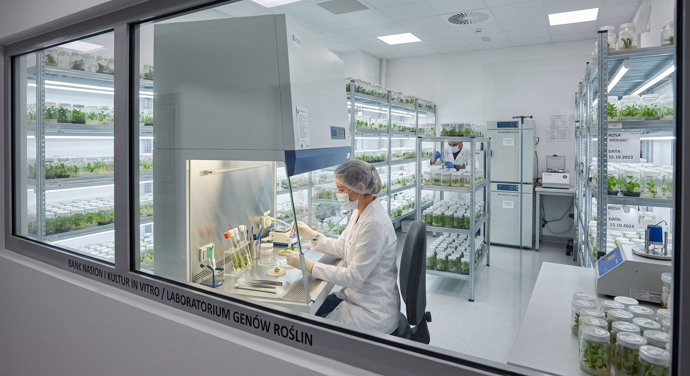
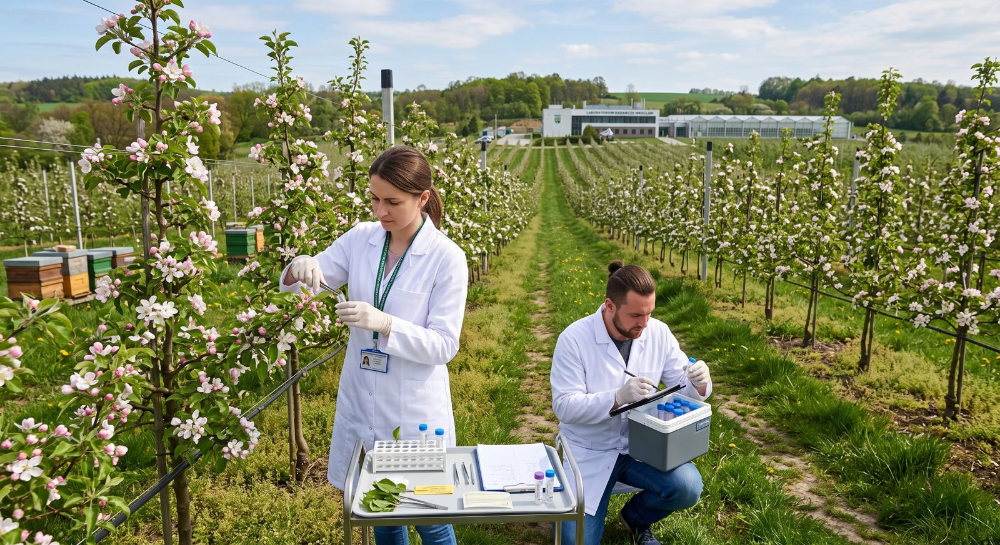

Z natury ku przyszłości
Nature & Future
Bankujemy rośliny w kulturach in vitro.
Dla parków narodowych i opiekunów przyrody.
Zanim gatunek zniknie ze swojego stanowiska.
Otwieramy pierwsze depozyty
Kim jesteśmy
Laboratorium w służbie ochrony przyrody.
Nature & Future to laboratorium kultur in vitro roślin. Z kilkumilimetrowego fragmentu tkanki wyprowadzamy zdrową roślinę i utrzymujemy ją w zamkniętym, sterylnym naczyniu przez lata.
Działamy w sektorze publicznym, bo chcemy zachować zagrożone gatunki roślin. Jesteśmy zapasową kopią dla parków narodowych, rezerwatów i ogrodów botanicznych: miejscem, w którym rzadka roślina czeka bezpiecznie, nawet jeśli jej stanowisko w terenie ucierpi.
- 6
- Gatunków w banku
- Wałbrzych
- Laboratorium
- Sektor publiczny
- Dla kogo pracujemy
Co robimy
Od stanowiska w terenie do kopii w banku — i z powrotem.
Bank roślin nie zastępuje ochrony w naturze. Jest ubezpieczeniem na wypadek, gdyby susza, choroba albo pożar zabrały populację, której nie da się odtworzyć z nasion.
-

01Pobranie
Razem z opiekunem terenu pobieramy niewielki fragment rośliny — tak, żeby populacja tego nie odczuła.
-

02Kultura in vitro
Tkanka trafia na sterylną pożywkę w zamkniętym naczyniu. Wyrasta z niej roślina identyczna z mateczną.
-

03Depozyt
Roślina zostaje w banku. Co kilka tygodni przenosimy ją na świeżą pożywkę i tak utrzymujemy bez ograniczenia czasu.
-

04Powrót
Kiedy stanowisko wymaga odtworzenia, namnażamy materiał z depozytu i przekazujemy go opiekunowi terenu.
Roślina, która zniknęła ze swojego stanowiska, nie musi zniknąć na zawsze.
Nasza misja
Chcemy, żeby każdy zagrożony gatunek rosnący na chronionym terenie miał swoją kopię poza nim — żywą, opisaną i gotową do namnożenia.
- Zabezpieczać rośliny, zanim staną się ostatnimi egzemplarzami.
- Pracować dla opiekunów przyrody, a nie zamiast nich.
- Przechowywać materiał tak, żeby dało się go zwrócić naturze.
Zespół
Ludzie, którzy prowadzą bank.
Łączymy biotechnologię, inżynierię i rozwój biznesu. Każdym depozytem opiekuje się konkretna osoba — od pobrania próbki po zwrot roślin na stanowisko.
-
Konrad
Founder · Head of Biotechnology
Mikropropagacja, procesy laboratoryjne, rozwój i walidacja protokołów.
-
Joanna
Co-founder · Product Development
Komora wzrostu, systemy mikroklimatu, produkt i zaplecze cyfrowe.
-
Marcin
Co-founder · Business Development
Strategia B2B, rozwój rynku, relacje z partnerami i komercjalizacja.
Kamino BioLabs
Ten sam bank, dla prywatnych upraw.
Hodowcy, szkółkarze i plantatorzy deponują u nas swoje odmiany, żeby jeden zły sezon nie odebrał im genotypu, nad którym pracowali latami.
Zobacz Kamino BioLabsKontakt
Opiekujesz się terenem, na którym rośnie coś rzadkiego?
Zgłoś gatunek przez formularz: napisz, co to za roślina, gdzie rośnie i w jakim jest stanie. Odpowiemy, czy da się ją wprowadzić do kultury i jak mogłaby wyglądać współpraca.
Teraz szczególnie chętnie rozmawiamy z instytucjami, które chcą zabezpieczyć swoje gatunki jako pierwsze. Metodę dla każdej rośliny dopracowujemy wspólnie z opiekunem terenu — od pierwszej próbki po gotowy depozyt.